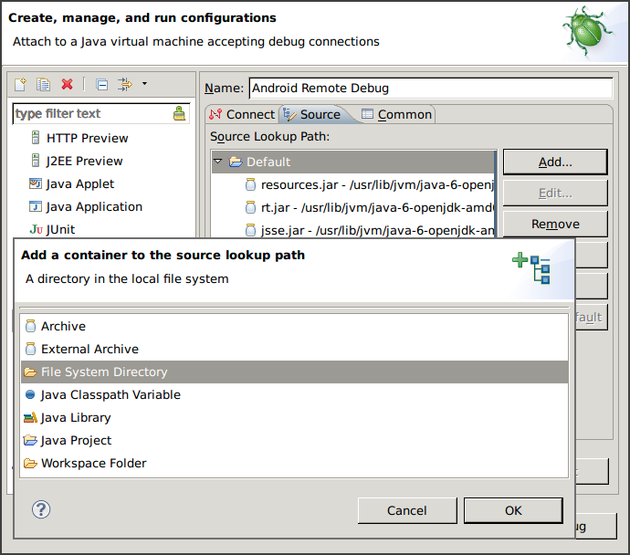

Android Java 層 Debug 工具介紹 (2)
在系列文的第一篇文章中，我已經介紹過 Log Viewer 與 Profiler，而這次所要介紹的內容則是 Debugger，以及一些 Reverse Engineering 工具。 那麼，就先從 Debugger 開始吧。
Remote Debugging
對於 Android App 開發者來說，在 Android 上 debug 是在自然不過的事了。
您只需要準備好專案，點一下 Debug 按鈕，IDE 就自動進入 debug 模式，接著無論是
下中斷點、單步執行，或是查看變數內容……等，一切皆任君差遣，但……
- 如果不是透過 IDE 啟動的程式執行到一半，出現了預期之外的狀況，這時您還能不 能透過 Debugger 進行 debug 呢？
- 若是執行的程式沒有建立專案，甚至沒有 Source Code 時，Debugger 還能有所作為嗎？
- 又或著是系統廠 RD 最想要的功能，能不能對系統 Service 進行 debug？
上述三個問題的答案都是 YES，當然其中也會有一些前提必須滿足，像是 debug 的對象必 須具有 debuggable flag，或著手機本身 image 為 Engineer build。在前一篇文章中我也 提過了，不需要太擔心這個條件無法滿足，因為下一個章節就會來解決這件事。:)
我在這裡所要介紹的技巧，其實就和對 App 進行 debug 本質上是一樣的，只不過操作的 過程比較手動一些。我會以 Eclipse 進行以下的示範，但其實使用任何一款支援 Remote Debugging 的 debugger 皆可，甚至連 Android plugin 都不需要安裝。
1. Select debug port

首先到任何一個看得見這畫面的地方，不管是 Eclipse 內建的 DDMS 也好，或著獨立的 Android Device Monitor 也好，總之只要是這個畫面都好。
對著想要進行 debug 的 process 點一下。在點選之前，最後一欄的文字本來會是 8600
之類，但點選之後就會變成 8600 / 8700。
這些數字是其實是 Port Frowarding 所開在本機的 port，透過這些 port，就可以和手機 內特定 process 對應的 JVM 進行溝通。
在點選之前的 port 是以流水號方式從 8600 開始編號，而只要是被選取的 process 就會額外準備一組 port 8700。因為數字是固定的，因此在後續設定 debugger 時會比較方 便，所以這個步驟其實並不是必要的。
2. Create debug configure

接下來，在 Debug Configurations 中建立一個新的 Remote Java Application，
右邊的 Project 則視您 debug 的對象選擇，若是沒有對應的專案則請保持空白，
Port 則填上在前一步驟看到的數字。因為所有我打算進行 debug 的 process 都會事先
被我設定好 port 8700，因此我只需要準備一個 Debug Configuration 即可。
最後按下 Debug 按鈕，順利的話就能看到 debugger 成功 attach，可以開始 debug
了！
3. Start debugging!
如果您所 debug 的 App 在 Eclipse 中有對應的專案，相信接下來該怎麼做已經不需要 多說明了，開啟想 debug 的 source code、設好中斷點，接著等程式執行到該部份就好。
但如果是沒有專案的 App，因為 IDE 不知道要去哪裡找 source code，就算您自己開好了 對應的程式碼並試圖在上面建立中斷點，也壓根不會有作用。
現在請回到前一張圖，注意到視窗右半邊共有三個分頁，其中第二個分頁 Source 就是我
們要找的答案！

將所有需要用到的 source code 的 root 都用 File System Directory 加入後，您就
可以正常的建立中斷點，並隨著 debugger 在程式碼間遨遊了。若以 Android Framework
為例，您所需要加入的路徑大概會是 .../android/frameworks/base/core/java。
除此之外我還會移除掉原先的 Default，因為這裡面都是 Java 的 Library，而 Android
裡頭用的則完全是另一套，雖然提供的 API 大同小異，但實作完全不一樣，這樣是沒辦法顯
示正確對應的 source code 的。
若是連 source code 都沒有，其實您還是可以暫停 thread、觀察變數、單步執行，但是這 樣能做甚麼？別急，看完下一個章節就知道了。
Reverse Engineering
dex2jar
dex2jar 是一套將 dalvik bytecode 轉成 java bytecode 的工具，雖然轉換後的檔案 並沒有因此就變得較好讀，但早就有現成的 Java decompiler 可以搭配使用，例如 JD-GUI 就是一個常見的搭配。
dex2jar 的執行方式非常的簡單，直接吃 apk 即可：
dex2jar.sh CtsVerifier.apk
產生的檔案是 CtsVerifier_dex2jar.jar，接著用 jd-gui 開啟：
jd-gui CtsVerifier_dex2jar.jar

不過不是每一次都能像上圖這樣順利，經常會遇到 decompile 的結果不正常的狀況。 這時候也許您可以考慮換一套 decompiler 試試，像 JAD 就是另一個常見的選擇。 這幾天我也剛好在 android cracking 上看到另一套工具 Luyten，聽說效果比 JD-GUI 更好。
不管如何，遇到需要 reverse engineering 時，先搬 dex2jar 出來，也許就已經足夠了。 但若是遇到應付不了的情形，或許這時候就該呼叫 apktool 了。
apktool
apktool 是一個 decode / rebuild apk 的工具，將 apk 解開後的目錄結構如下：
AndroidManifest.xml apktool.yml assets lib res smali
前面提了好幾次的 debuggable flag 就在 AndroidManifest.xml 裡，開啟 debuggable 後 rebuild 並安裝至手機內，先前說過的工具就全部都能使用了。
smali
接下來請注意到 smali 這個資料夾，這裡存的是利用 smali 這套工具將 dalvik bytecode 反組譯之後的結果。
smali 這名字取得很有趣，是冰島語的 assembler。為什麼選冰島語？因為 dalvik
是冰島的一個鎮的名字。
smali 的語法源自於 jasmin，並將指令替換為 Android 上所用的 Dalvik opcodes。
關於 smali 細節語法的說明，似乎不適合繼續寫在這篇文章內了，因此我這裡就貼一小段 source code 與實際產生的 smali 做對照，供各位做參考：
- source code (截取自 CtsVerifier)
public void add(TestListItem item) { mRows.add(item); notifyDataSetChanged(); }
- smali
# virtual methods .method public add(Lcom/android/cts/verifier/TestListAdapter$TestListItem;)V # 回傳值為 void .locals 1 # 除了參數以外只有一個變數，即 v0 .parameter "item" .prologue .line 37 # 對應的 source code 行號 iget-object v0, p0, Lcom/android/cts/verifier/ArrayTestListAdapter;->mRows:Ljava/util/List; invoke-interface {v0, p1}, Ljava/util/List;->add(Ljava/lang/Object;)Z .line 38 # p0=this, p1=item invoke-virtual {p0}, Lcom/android/cts/verifier/ArrayTestListAdapter;->notifyDataSetChanged()V .line 39 return-void .end method
smali 的語法其實並不難，因此在理解之後，少量的修改程式邏輯或著安插其他程式碼， 也都不會是什麼困難的事了。
Conclusion
這次兩篇文章共介紹了四種類型的工具，說明一下我使用各種工具的時機：
- Log viewer
- 尋找問題發生點
- 了解流程，除了訊息本身以外，也很容易藉由文字找出對應的程式位置
- Profiler
- 找出程式瓶頸與需要最佳化的位置
- 畫 call graph 幫助了解執行流程
- Debugger
- 觀察各 thread 的 method stack 與變數內容
- Reverse Engineering tools
- 不得已沒有 source code 的時候才用 XD